RPi3 Auto Email New Public IP If Changed (Python3)
Step
Use
wgetto download IP-Reporting scriptsudo wget https://raw.github.com/carry0987/Raspberry-Pi-Repo/master/Auto-Report-IP/report-ip.py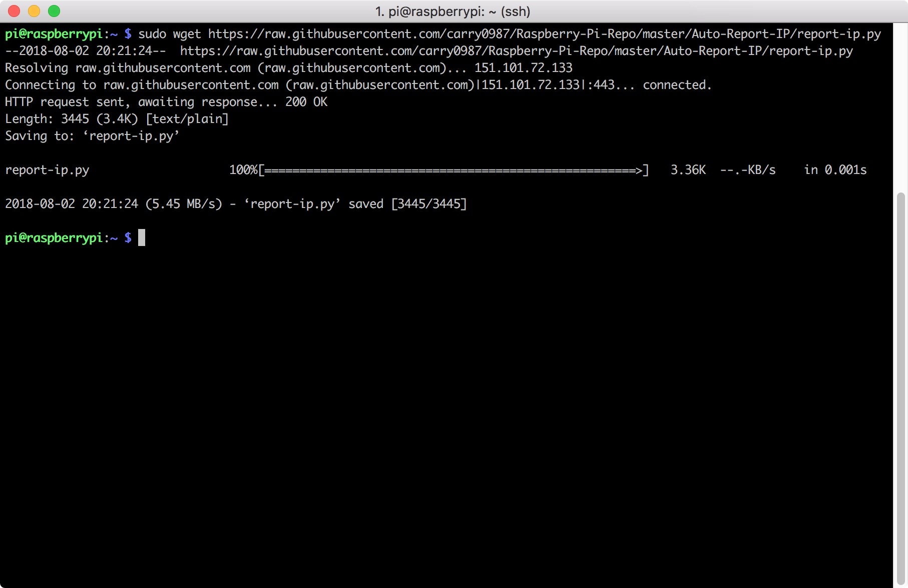
Give the script executing permission
sudo chmod +x report-ip.py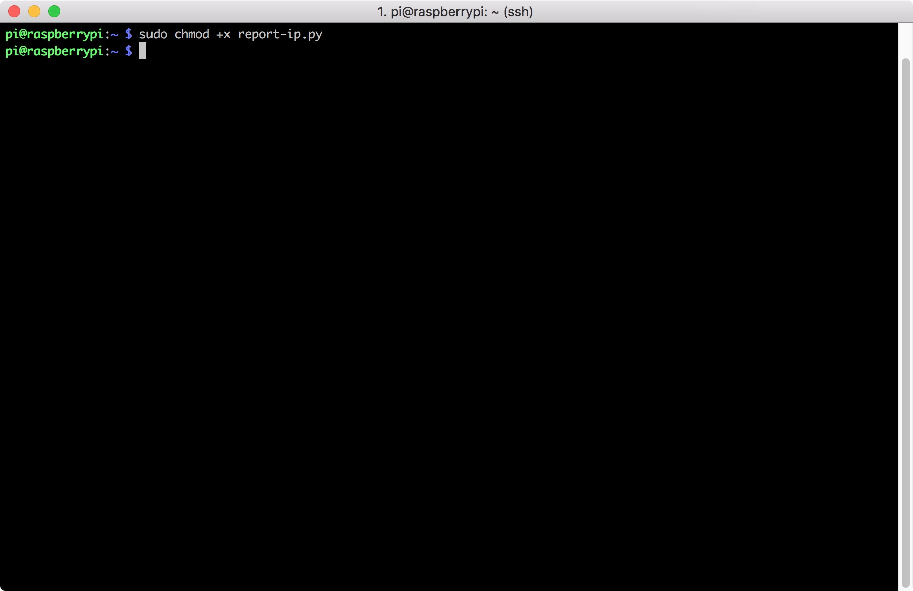
Enter your gmail address, password and receiver email address to the script
sudo vim report-ip.py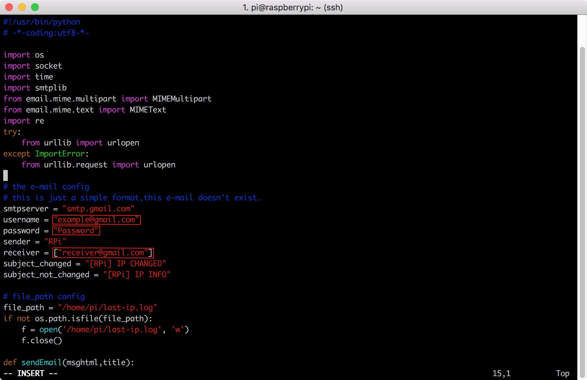 Note : If your gmail have set
Two-Step Verification, you should follow the step to get token:- Log-in into Gmail with your account
- Navigate to https://security.google.com/settings/security/apppasswords
- In 'select app' choose 'custom', give it an arbitrary name and press generate
- It will give you 16 chars token
- Use the token as password with your Gmail account and two factor authentication will not be required.
Move
report-ip.pyto usr foldersudo mv report-ip.py /usr/local/bin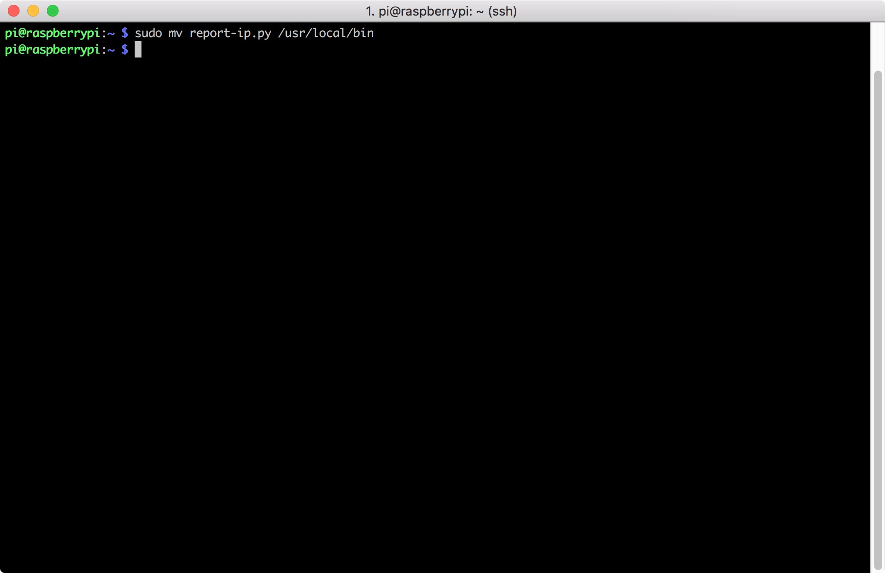
Create a systemd service to make the script will auto be run on boot It can auto check the network connection make sure the network is online so that it can send the email
sudo vim /etc/systemd/system/report-ip.service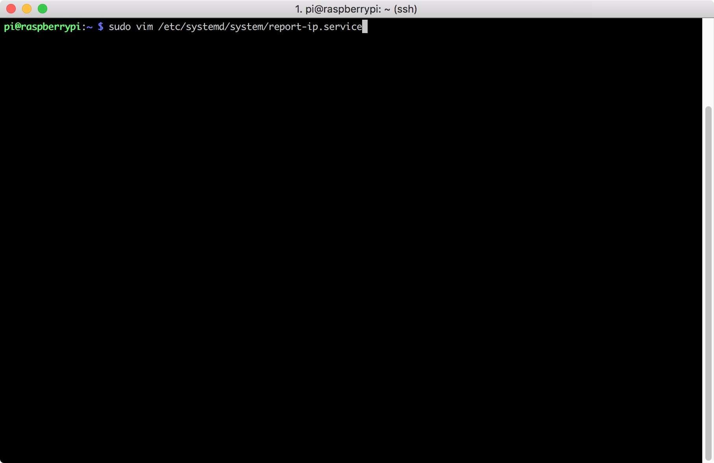
Put the following script into the
report-ip.service,then save and exit[Unit] Description=IP Reporter After=network-online.target Wants=network-online.target [Service] ExecStart=/usr/bin/python3 /usr/local/bin/report-ip.py [Install] WantedBy=multi-user.target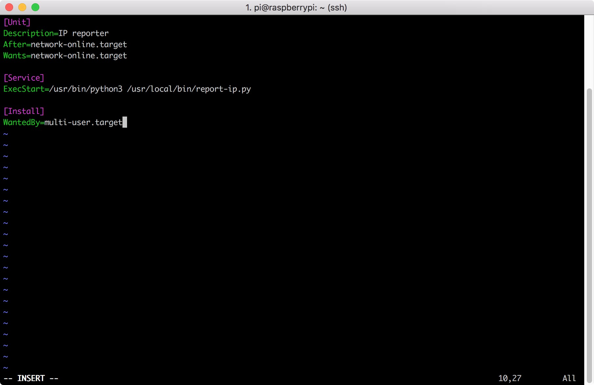
Enable the service
sudo systemctl enable report-ip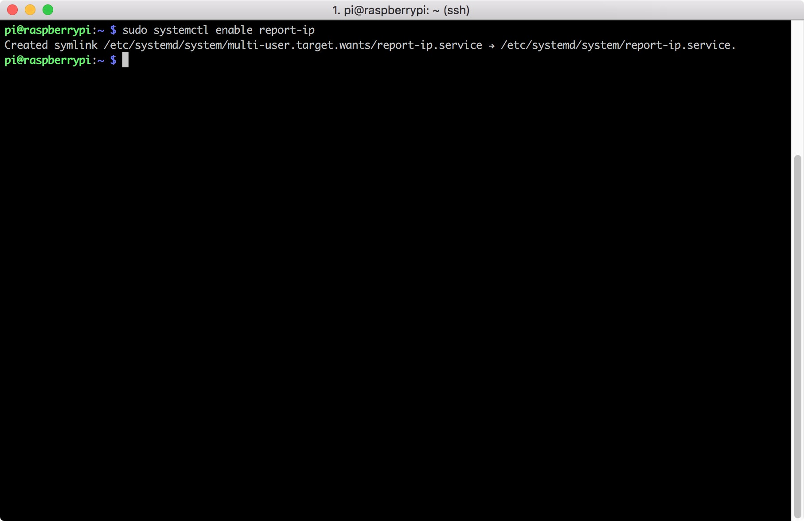
Start the service
sudo systemctl start report-ip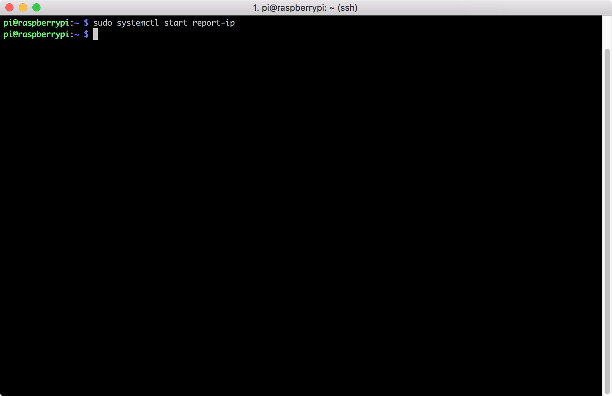
Use
systemctlto check the status of the servicesudo systemctl status report-ip
Now edit crontab to make the script run every minutes
sudo vim /etc/crontab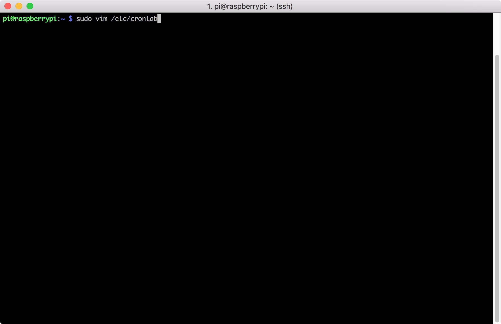
Add the following script on the bottom, then save and exit
* * * * * root /usr/bin/python3 /usr/local/bin/report-ip.py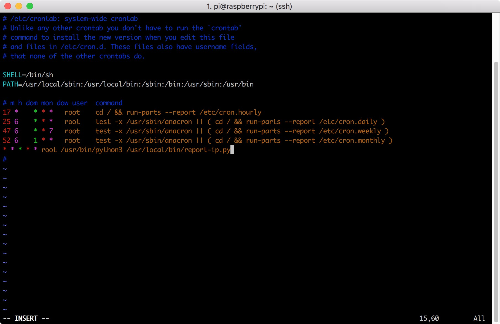
Restart cron service
sudo service cron restart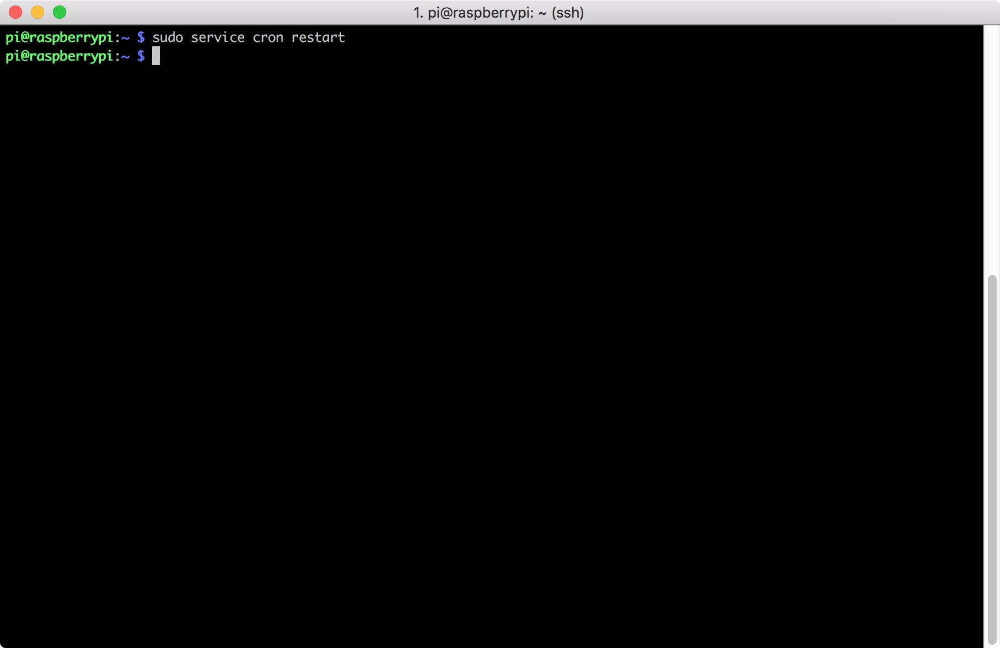
Finish